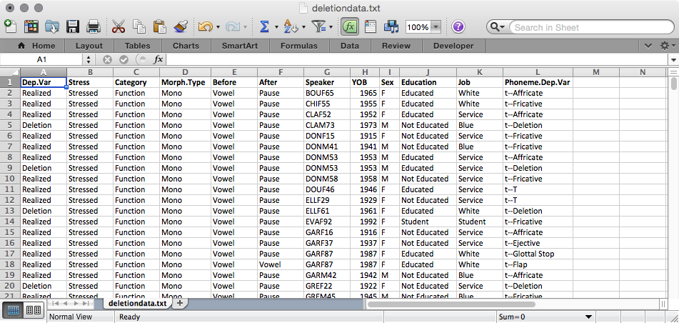
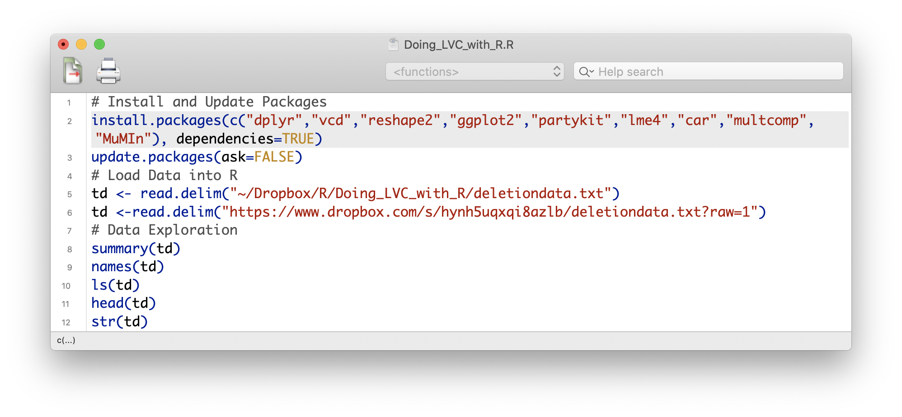

install.packages(c("dplyr","vcd","reshape2","ggplot2","partykit","lme4","car","multcomp", "MuMIn"), dependencies = TRUE)Getting Started
Matt Hunt Gardner ![]()
Getting Started
If you have not installed R or have never used R before, please check out Swirl https://swirlstats.com/, which will guide you through installing and learning the basic functionality of R. Swirl is a collection of interactive courses. Its R Programming beginner course will introduce you to R and several concepts discussed in this guide. Even if you have used R before, you should still go through the basic R Programming tutorial — even I learned something new when testing it before recommending it here.
The first two chapters of Bodo Winter’s Statistics or Lingustics: An Introduction Using R will also help you learn the same fundamental R skills.
Introduction
These instructions are not intended to be a comprehensive overview of R’s functionality, which is myriad. Instead it is a set of very specific instructions for doing the kinds of things in R that variationist sociolinguists familiar with Goldvarb often want to do. This includes extracting summary statistics from a standard token spreadsheet and formatting those statistics in such a way that they can be graphed using the package ggplot2, as well as testing the trends in those summary statistics using mixed-effects logistic regression analysis. These instructions assume you have installed the latest version of R (4.1.3 or later ). Even though this guide does not show everything that R can do, after reading and working your way through this guide, you should be familiar enough with how R generally works to figure out how do something not covered.
Note
The best way to learn how to use R is to play with it. Learn by doing. You can’t break R. It doesn’t bite. Even though R is a cutting edge statistical tool, I compare the experience working with it to fixing an old car. Sometimes you just need to keep tinkering until the engine starts and runs smoothly. Other times you just need to kick it.
If you run into a problem you don’t know how to solve, Google it. I guarantee someone has had the same question already. There are many, many online R tutorials. That’s how I learned how to use R. That said, it still sometimes takes me many failed attempts before I get something right.

R and Goldvarb
In this guide I mention the program Goldvarb a lot. This is a well-known and widely-used program for doing multivariate analysis in the language variation and change literature. If you are are unfamiliar with Goldvarb you can learn more in Sali Tagliamonte’s (2006) Analysing Sociolingusitic Variation. I remain agnostic as to whether R or Goldvarb or any other analysis tool is the one you must use for your research. Each tool has pros and cons. These instructions are simply a set of procedures you can use if you choose to use R.
Token Files
You should have one master Microsoft Excel spreadsheet for your data. From this master spreadsheet you can create other files that can be used in programs like Goldvarb and R. Each row of your spreadsheet should represent an individual token. Each column of your spreadsheet should represent a different, independent variable. The example token file for this guide is structured this way, as in Figure 2.

deletiondata.txt
Warning
Do not include anything in your token file that isn’t a token. Do not create sum columns. Do not add random notes to the right or the top of the data. R will try to interpret all of this as data.
R Script Files
Anytime you are using R you should be using script files. Script files are very similar to Goldvarb condition files. They are files that include instructions that tell R what to do. By saving your command functions in script files you create replicability for your work in R. You may have pseudo-script files already. Many people keep a text file full of useful R command functions. An R script file is an R-specific file that does the same thing.
I cannot stress enough the importance of replicability. You always want to be able to go back and see every step you took in your analysis. This is especially true in the frequent situation where a reviewer suggests you go back and double-check something in your data or tweak your analysis in some way. Using script files, which are essentially a log of all your steps, is an excellent way to ensure replicability.

Some people have one script file for an entire project — say, a paper. My co-author Derek Denis does this. Other people have specific script files for specific results — e.g., one script file for each graph with the complete instructions for making that one graph, and the script file and the graph it creates labelled identically. This is the method I prefer. You may choose to do either, or both, or choose not to use script files at all. It’s up to you.
All of the functions discussed in this guide are in a single R script file which is replicated at the end of this guide.
If you download this file and open it, R will automatically open for you. If you want to create a new R script file after you’ve opened R you can do so via the File menu: File>New Document.
R and R Studio
The following instructions assume you are using the core R program, not R Studio. There is no real difference between these programs (at least in how R operates). R Studio is just an alternative user interface. Some of the external commands (e.g. creating a new R script file, etc.) may be different, but the actual R functions listed in this document will be the same. There is no advantage to using the R core program or R Studio. The choice is simply personal preference. I prefer the core R program because I like to be able to see multiple script files at the same time. R Studio organizes script files in tabs. You may prefer R Studio because it can also author other types of documents.
To execute a command function that is in a script file simply put your cursor on the same line as that command and press the execution or Run command depending on your operating system and editor. In Figure 3 the cursor is placed in the middle of line 2; pressing Control+Return on my Mac executes the command function highlighted in grey. You can also highlight a large portion, or even all of your script file, and press the execution command to execute multiple commands at once. There is also an execute all or Source command that will execute the entire script file.
| Execute | Mac OSX | Windows PC |
|---|---|---|
| R Editor | Command+Return |
CTRL+R |
| R Studio | Command+Return |
CTRL+Enter |
| Execute | Mac OSX | Windows PC |
|---|---|---|
| R Editor | Command+E |
CTRL+Shift+R |
| R Studio | Command+Option+R |
CTRL+Alt+R |
Installing Packages
Before you begin doing any kind of analysis in R, you’ll first need several `packages.’ Packages are simply additional sets of instructions that can do things above and beyond R’s core functionality. Packages are created by academics and are made available to everyone. R doesn’t automatically download every package, so if you want to use a specific package, you must download it. You only need to do this one time. You also need to be connected to the internet to do it. Type the following function into R’s console window and press Enter/Return or type it into a script file and press CTRL+Enter/Command+Return:
Above install.packages() is a function for installing packages. Inside the parentheses you tell R which packages to install. In this case you want to install multiple packages. Any time you need to combine multiple things in R you use the concatenating function c(). So the above function says combine the package names dplyr,vcd, reshape2, ggplot2, partykit, lme4, car, multcomp, andMuNIn and then install the packages with those names. The dependencies = TRUE specification tells R to install any additional packages that these packages depend on to function.
When you execute this function, R might ask you to pick a CRAN Mirror. This is just R asking you from where you want to download the packages. CRAN is the Comprehensive R Archive Network and mirrors are simply different institutions that offer identical copies of R files for downloading. Usually I just pick the option closest to me, which is the University of Toronto in Canada. If you’ve downloaded packages in the past you’ve likely already set your CRAN Mirror, and won’t be prompted to do it again.
Once you’ve selected your CRAN Mirror, if necessary, and executed the install.packages() function, you may see a bunch of text scroll across your R console window. This is just R telling you that it is downloading and installing these packages. You can also install packages by selecting Packages & Data > Package Installer. In this window click Get List, then search/browse for the required packages one by one. When you find a package, highlight it and click Install Selected. Make sure the Install Dependencies option is checked.
As R updates over time, so too must these packages. But packages don’t update automatically. Therefore it’s a good idea to periodically execute the function below. Do this now. These instructions assume that you have the most up to date version of R and its packages. The ask=FALSE option for the update.packages() function just means that R will run the update ’silently”, or rather, it won’t ask you whether or not you want to update each individual package you’ve installed.
update.packages(ask=FALSE)Reuse
CC-BY-SA 4.0